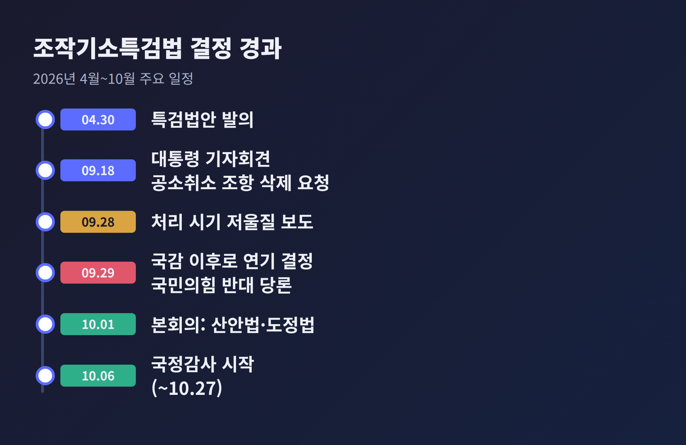
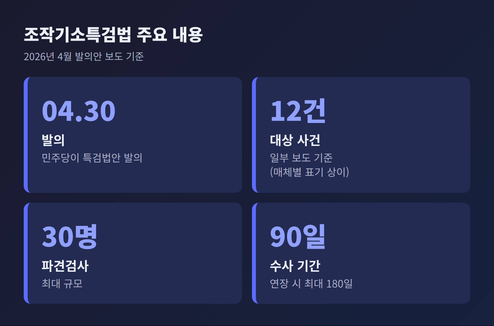
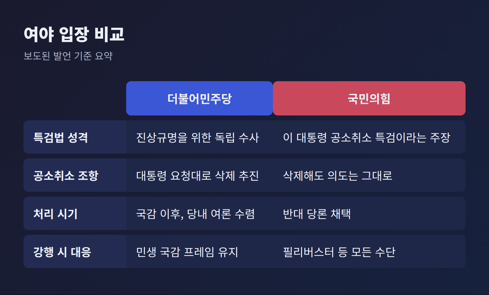
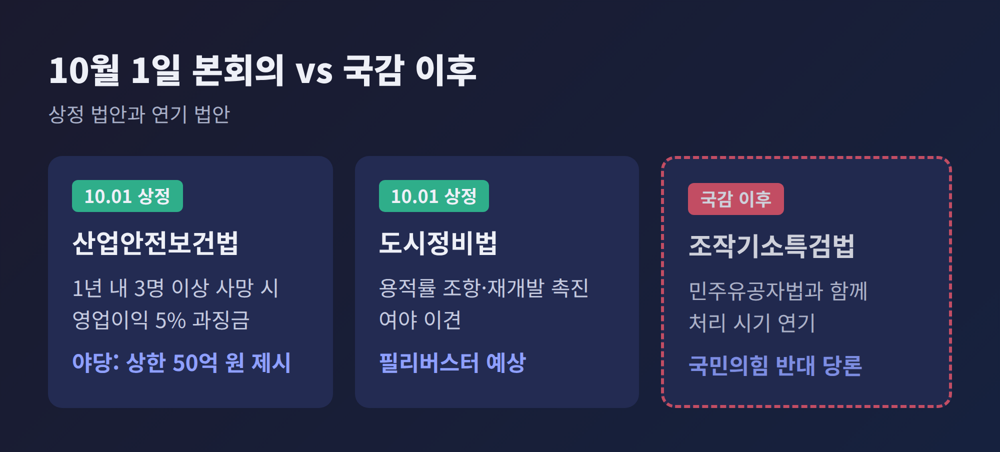
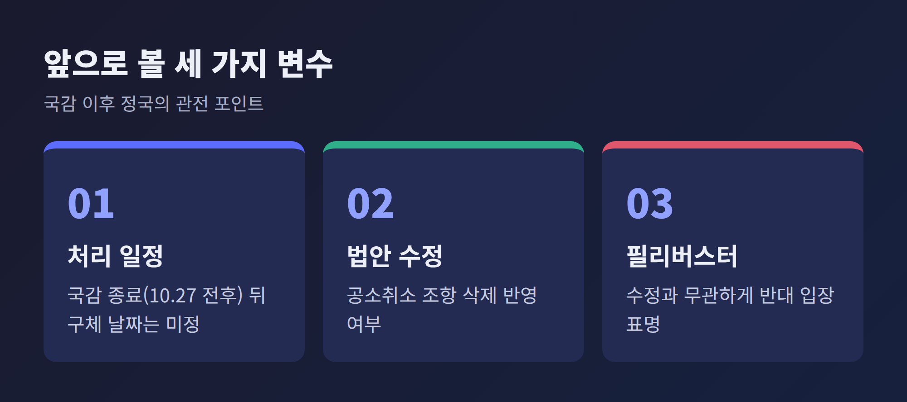

이번 글에서는 더불어민주당이 조작기소특검법의 처리를 국정감사 이후로 미룬 배경을 정리합니다. 무엇이 결정됐는지, 법안의 쟁점은 무엇인지, 국감 일정과 어떻게 맞물리는지를 차례로 살펴보겠습니다. 여야 양측의 발언은 보도된 내용을 기준으로 옮겼습니다.
3줄 요약
민주당은 2026년 9월 29일 의원총회를 열고 조작기소특검법과 민주유공자법 등 정치적 쟁점이 있는 법안을 10월 1일 본회의에 올리지 않기로 했습니다. 처리 시점은 국정감사 이후로 넘겼습니다.
전은수 원내대변인은 기자들에게 필요성에는 다들 공감하고 있다고 밝혔습니다. 다만 시기는 "당내 여론 수렴을 해서 국감 이후에 보도록 하겠다"고 설명했습니다. 이유로는 이번 국감의 목표가 민생에 집중하는 것이라는 점을 들었습니다.
폐기나 철회가 아니라 시기 조정이라는 점이 핵심입니다. 불과 하루 전인 9월 28일까지만 해도 여당 내에서는 "이번 주에 할지, 국감 이후에 할지"를 저울질하고 있다는 보도가 나왔습니다. 결정이 짧은 기간에 방향을 바꾼 셈입니다.

이 결정이 주목받는 이유는 두 가지입니다. 하나는 법안 자체가 현직 대통령 관련 재판과 맞닿아 있다는 점입니다. 다른 하나는 처리 시점이 국정감사 정국의 분위기를 좌우할 수 있다는 점입니다.
2026년 국정감사는 10월 6일부터 27일까지 3주간 열립니다. 일부 상임위의 감사는 10월 30일까지 이어집니다. 국감 직전에 특검법을 상정하면 필리버스터와 여야 대치가 이어지고, 국감의 초점이 민생에서 멀어질 수 있습니다. 민주당이 "민생 올인"을 내세운 배경에는 이런 계산이 깔려 있다는 것이 보도의 공통된 해석입니다.
이데일리는 당 안팎에서 최근 지지율이 소폭 회복세라는 점이 고려됐다고 전했습니다. 다만 이는 한 매체의 보도이며, 당이 공식적으로 밝힌 사유는 아닙니다.
법안은 2026년 4월 30일 민주당이 발의했습니다. 검찰이 수사·기소한 사건 가운데 조작 의혹이 있는 사건을 특별검사가 들여다보는 내용입니다. 국회 국정조사에서 다뤄진 대장동, 위례신도시, 쌍방울 대북송금, 부동산 통계 조작 의혹 등이 대상으로 거론됩니다.
대상 범위는 보도마다 표기가 다릅니다. 스페셜타임스와 아시아경제는 이재명 대통령 관련 사건 등 12개 사건으로 전했습니다. 발의 당시에는 사건군을 5~6개 유형으로 묶어 소개한 보도도 있었습니다. 정확한 사건 수는 법안 원문으로 확인하시길 권합니다.
특검 규모와 기간도 보도에 소개됐습니다. 파견 검사는 최대 30명이고, 수사 기간은 기본 90일에 연장 시 최대 180일입니다. 총 인력은 매체별로 수치가 달라 여기서는 다루지 않습니다.

논란의 중심은 '공소 유지 여부를 판단하는 업무'를 특검에 맡긴 조항입니다. 아시아경제는 발의 당시 이를 사실상 공소취소권 부여로 해석하는 시각이 있다고 보도했습니다. 국민의힘은 "이 대통령이 임명한 특검이 피고인 이 대통령의 사건을 처분하는 구조"라고 비판했습니다.
이재명 대통령은 9월 18일 기자회견에서 국회에 조항 정리를 요청했습니다. 특검 권한에서 기소된 사건의 이송과 처분, 즉 공소취소 조항을 삭제하고 진상규명에 집중해 달라는 취지였습니다. 민주당은 대통령의 요청에 협조하겠다는 입장을 냈습니다.
야당은 이를 받아들이지 않았습니다. 정점식 원내대표는 공소취소 권한을 주지 않아 괜찮다는 주장을 두고 "눈 가리고 아웅"이라고 말했습니다. 결론을 정해 놓은 수사는 공소취소를 위한 '빌드업'이라는 논리입니다. 법조계 시각도 엇갈립니다. 조문을 빼도 실제 공소취소를 막는 효과는 크지 않다는 의견이 있는 반면, 명시적 권한 부여가 신뢰를 해칠 수 있어 삭제가 타당하다는 의견도 있습니다.
여당은 진상규명의 필요성을 강조합니다. 윤석열 정부 검찰의 수사와 기소에 문제가 없었는지 독립적인 특검이 확인해야 한다는 입장입니다. 공소취소 조항 삭제로 논란의 소지를 줄였다는 설명도 덧붙입니다. 다만 당내에서는 신중론도 나옵니다. 경향신문에 따르면 한 중진 의원은 "현재로선 정무적 부담이 크다"고 말했고, 초선 의원 중에는 추진 자체에 신중해야 한다는 취지의 의견도 있었습니다.
국민의힘은 9월 29일 의원총회에서 특검법 반대를 당론으로 정했습니다. 강행 처리 시 필리버스터를 포함한 모든 수단으로 대응하겠다는 방침입니다. 정점식 원내대표는 법안 추진이 "탄핵·하야·퇴진의 길"로 이어질 수 있다고 주장했습니다. 서울경제는 국민의힘이 10월 3일 서울시청 인근 집회를 계획하고 있다고 전했습니다. 이 집회 계획은 단일 매체 보도입니다.

10월 1일 본회의에는 산업안전보건법과 도시 및 주거환경정비법 개정안이 상정됩니다. 전은수 원내대변인은 필리버스터가 예상되는 법안도 올리겠다고 밝혔습니다. 민생을 위해 통과시켜야 한다는 설명입니다.
뉴스핌에 따르면 산안법의 핵심은 최근 1년 안에 3명 이상이 사망한 사업장에 영업이익의 5% 과징금을 부과하는 조항입니다. 야당은 상한 50억 원 안을 내세우며 맞서고 있습니다. 도정법은 용적률 조항과 재개발 촉진 방안을 두고 여야가 대립합니다.
국민의힘 최수진 원내수석대변인은 두 법안의 과징금 기준과 용적률 조항에서 합의가 이뤄지지 않았다고 짚었습니다. 필리버스터 신청 여부는 아직 정해지지 않았습니다. 이데일리는 이날 본회의에서 60~70건 안팎의 민생 법안이 처리될 예정이라고 전했습니다.

첫째 관전 포인트는 국감이 끝난 뒤의 일정입니다. 국감은 10월 27일 전후로 마무리되고, 일부는 30일까지 이어집니다. 민주당이 '국감 이후'라고 밝혔을 뿐 구체적 날짜는 없습니다. 당 관계자가 "가능한 빨리 하자고 정리됐다"고 말한 것으로 전해지지만, 그 시점은 국감 결과와 여론에 따라 달라질 수 있습니다.
둘째, 법안의 내용이 바뀔 가능성입니다. 대통령의 삭제 요청을 반영한 수정안이 마련되면 공소취소 논쟁의 성격은 달라집니다. 그래도 특검 구성과 수사 대상을 두고 여야 충돌은 남을 것입니다.
셋째, 필리버스터입니다. 국민의힘은 수정 여부와 무관하게 반대 입장을 밝혔습니다. 무제한 토론이 이어지면 본회의 일정 전체에 영향을 줄 수 있습니다.
이 글은 2026년 9월 29일까지 보도된 내용을 바탕으로 했습니다. 일부 세부 사항은 매체별로 표기가 달라 확인이 필요한 부분을 밝혀 두었습니다. 이후 상황은 달라질 수 있습니다.

정리하면 이렇습니다. 이번 결정은 법안을 접은 것이 아니라 순서를 바꾼 것입니다.
"필요성에는 공감하되 시기는 국감 이후."
여당은 민생 국감을, 야당은 특검 저지를 각자의 명분으로 내세웠습니다. 국감이 끝난 뒤 이 법안이 어떤 모습으로 다시 올라올지 지켜볼 일입니다.